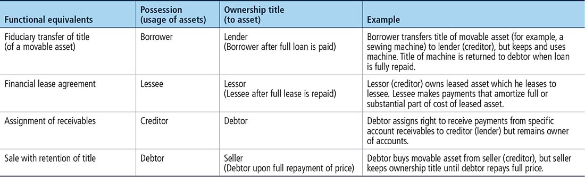
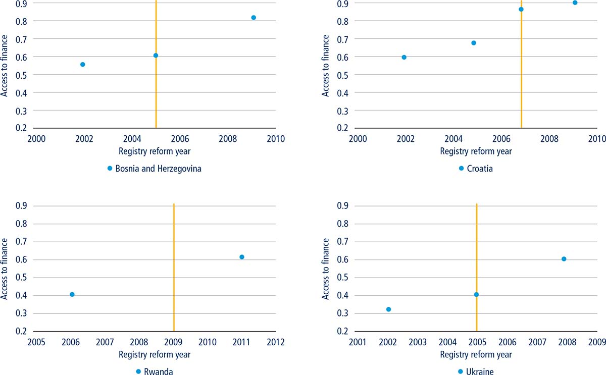
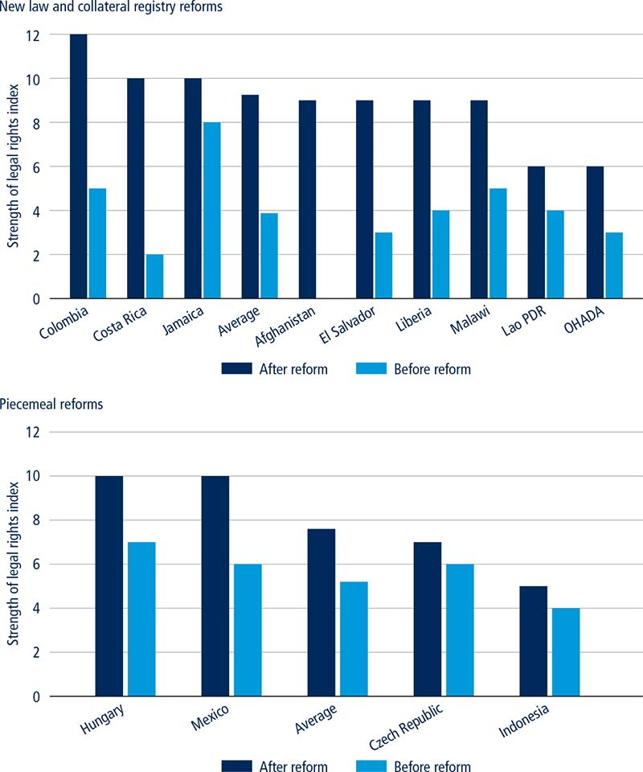

Secured transactions regimes are designed to make it easier for small and medium-size enterprises to obtain credit and other types of funding from both traditional and nontraditional financial institutions. However, these systems should be supported by effective enforcement mechanisms. The most traditional component of an effective secured transactions system is a guarantee over assets (nonpossessory security interests) where a debtor is authorized to continue operating by using the secured asset for the benefit of their business. In addition to the traditional nonpossessory pledge, other guarantee equivalents have emerged in an effort to increase business capital. For example, with a financial lease, a business can use a leased machine in exchange for monthly payments. However, had this debt not been recorded, future lenders would not have a clear view of the business standing and who has priority over its assets, especially if the business becomes insolvent. The registration of assets in a well-running collateral registry is crucial for the efficient operation of financial institutions.
▪ Modern secured transactions regimes can be regulated either by a piecemeal approach, where various existing laws are amended, or by the passage of a new comprehensive law that encompasses all types of security interests.
▪ An integrated approach to secured transactions enlarges the scope of assets that small and medium-size enterprises can use as collateral, thus expanding their access to finance. This approach allows the borrower to maintain possession of the collateralized asset for use in its business operations.
▪ A modern collateral registry—centralized, notice-based and with online public access—is a key ingredient of a well-functioning modern economy. The registry should be unified for all types of movable assets, searchable and accessible online for verifications, registrations, amendments and renewals. By mid-2016, 26 economies had operational, notice-based and modern collateral registries, including Australia, Colombia, the Lao People’s Democratic Republic and most recently Costa Rica, El Salvador, Liberia and Malawi.
Reforms to legal frameworks governing secured transactions have increased worldwide in the past decade, benefitting creditors and businesses alike. The enactment of laws that cover all types of lending contracts using movable assets as collateral can expand the scope of assets available to secure repayment of a loan. The capital stock of businesses in most developing economies is typically in movable assets.1 The ability to use movable assets as collateral is therefore central to improving access to credit and, in a broad sense, to funding. Such collateral can be created on a range of assets. Further, there are many equivalents to traditional collateral where the borrower keeps use of the collateral—often referred to as functional equivalents—including fiduciary transfer of title, financial lease, assignment of receivables and retention-of-title sales (table 5.1). Funding can be achieved not only through traditional bank financing and credit but also through financial lease agreements, for example, that can benefit small and medium-size enterprises unable to raise money directly in the capital markets. Such agreements allow these firms to access funding, thereby preserving their cash flow and increasing their potential for growth.2
TABLE 5.1 Examples of functional equivalents

Creditors are more willing to provide funding when it can be guaranteed with a security interest, meaning property interests created by agreement or by law over the debtor’s assets. A good practice associated with collaterals that remain in the possession of the debtor so that the company can continue to use them (that is, the company that received the loan keeps using machines that serve as collateral in order to generate profit for its business and pay back the loan) is for the law to allow for a general description of the collateral. Rather than being specific—300 XYZ laptops, serial number 1234, metal colored, 14-inch screen, for example—a general description of “all laptop inventories” would be acceptable. Credit markets also tend to operate better when the law stipulates that all such interests be registered in a collateral registry so as to be enforceable against third parties.
It is essential that national legislation allows for a nonpossessory security interest. A financial lease on a company’s machine does not, for example, imply that the machine will be handed over to the lessor but rather that the firm may use the machine to carry on business and generate profits to pay off the debt. A modern collateral registry should protect the nonpossessory security rights of creditors against third parties by ensuring transparency. Legislation should also allow for collateral to cover any assets obtained in the future or acquired after the collateral was created as well as products, proceeds and replacements of the original assets (for example, wood in stock is guaranteed for a loan used to produce furniture that is automatically collateralized).3 The law should allow for a general description of the assets subject to security, without requiring detailed descriptions or serial numbers, within the scope of the value of the loan. The description should provide enough detail to simply allow the identification of the collateral. Permitting a wide range of assets to be used as collateral provides security for all types of obligations, present and future, including one-time loans and revolving credit lines.
A centralized collateral registry—which encompasses all types of collateral, security interests and their functional equivalents—should support the secured transactions legal and institutional regime at the national level. This registry is distinct from a serial number collateral registry which serves for registration of assets such as motor vehicles, sea-going vessels and aircraft, for example. A modern secured transactions system allows secured creditors to establish their priority to the collateral, in case of business liquidation or default, in an efficient and transparent manner. The collateral registry needs to be centralized nationally, unified for all types of movable assets, accessible online for verifications, registrations, amendments and renewals, searchable by debtor’s identifiers and accessible to the general public. The registration process needs to be simple, requiring only the basic information related to the collateral, such as identifiers of the parties, description of the collateral and the secured amount without need for specification. The law should not have as a registration requirement that the underlying security documentation—such as loan agreements, security agreements, and the terms and conditions of the loan—be reported to the collateral registry for the simple reason that the purpose of the registry is only to “give notice” of a security interest and to establish a priority scheme. Also, a notice-based system eliminates the risk of human error by registry employees and reduces the cost of operating the collateral registry. Policy makers should encourage a modest registration fee be charged to offset the operational costs of running the registry.
The introduction of a collateral registry increases the share of firms with access to a line of credit, loan or overdraft (figure 5.1). One study showed that the number of firms with access to finance increased by approximately 8% on average in the period following the introduction of the registry for movable collateral; interest rates also fell and loan maturities were extended. Introducing a new registry for movable collateral has stronger benefits for small firms, which are often more constrained in their access to finance and do not have many fixed assets that can serve as collateral but which, on the other hand, are often the primary generators of new jobs and make a substantial contribution to economic growth, particularly in the developing world.4
FIGURE 5.1 The introduction of a collateral registry increases access to finance for businesses

Source: Adapted from Love, Martínez Pería and Singh (2013, figure 1).
Note: The vertical line indicates the year of introduction of a collateral registry for movable assets.
A ground-breaking property law was approved in China in 2007 and a modern collateral registry was set up in the same year. More than a dozen government policies and regulations concerning movable asset finance have been issued since. As a result, a majority of lending institutions have rolled out various credit products based on movable assets benefiting mostly small and medium-size enterprises but also agribusiness operators and domestic and international traders. A digital accounts receivable finance platform under the central bank has been running since the end of 2013 with a cumulative financing volume of about $400 billion. The share of commercial credit involving movable assets has been raised from 12% in 2004 to around 40% currently. Cumulatively since the end of 2007—and for accounts receivable and lease finance only—over 2.2 million transactions have been registered at the collateral registry with a financing volume of at least $10 trillion. Annual disbursements of debt finance involving movable assets is around $3 trillion, including large but important infrastructure deals and the issuance of bonds backed by receivables.
Besides achieving impressive results, Ghana’s collateral registry reform project from 2008 to 2014 enabled the design and implementation of the first modern collateral registry in Africa, opening the market for secured transactions and collateral registry reforms in the region. Between its establishment in 2010 and the end of 2015, the registry facilitated $1.3 billion in financing for small-scale businesses and $12 billion in total financing for the business sector overall using only movable assets as collateral for loans. Women entrepreneurs have played an important role in this scheme—women borrowers account for 40% of total registrations and more than $100 million in financing for this sector.
As in most fragile and conflict-affected economies, the lack of access to credit remains a key challenge to enterprise development in Liberia. A collateral registry was officially launched in Liberia on June 18, 2014. It was widely expected that the Ebola crisis, which had a negative impact on commercial bank financing, would have reduced the use of the collateral registry as well. By June 2016, however—only two years after its launch—the registry had recorded 527 security interest registrations, over 94% of which went to individuals (51% of which were women), facilitating financing of more than $237 million.5
Eighty two economies have reformed their legislation governing secured transactions over the past decade.6 During that period two approaches have emerged in the way these economies have made the adjustments to their national laws to expand coverage to all traditional security interests on movable assets and their functional equivalents. The Doing Business getting credit indicators capture some of these reforms (figure 5.2).
FIGURE 5.2 Legal rights of secured creditors in several economies that reformed in 2014-2016

Sources: Doing Business database; Enterprise Surveys database (http://www.enterprisesurveys.org), World Bank.
Note: This figure captures economies with reforms between Doing Business 2014 and Doing Business 2017. Reforms that took place earlier or prior to the inception of Doing Business 2003 are not reflected in this figure. The score for Indonesia and Mexico is the average for both cities measured in each case.
The first approach is to introduce one comprehensive law covering secured transactions that regulates all types of security interests available to both incorporated and non-incorporated entities. An example of this approach is the new secured transactions law in Colombia, which entered into force in August 2014. A follow-up regulation established the terms for the implementation of a centralized collateral registry. Together these established a modern legal regime for secured transactions wherein all types of movable assets, present or future, may be used as collateral to secure a loan. Functional equivalents of loans secured with movable property, such as assignment of receivables or sales with retention of title, were brought under regulation. The law also provides for priority rules outside bankruptcy and establishes the rights of secured creditors during a reorganization procedure, thereby assuring lenders that they can recover payments due ahead of any other claims. Finally, the law permits out-of-court enforcement of collateral allowing for both public tender and private sale.
The new legal framework in Colombia allows borrowers to obtain loans by using collateral resources such as inventory, machinery and crops. Since the registry went live in March 2015, there have been over one million registrations valued at more than $93 billion. Over 10% of these loans represent new credits. More than 100 financial institutions are participating in the registry of lenders. Some of Colombia’s largest banks have provided loans secured by movable collateral including embroidery machines, milking equipment and rice crops.7 According to data from the World Bank Enterprise Surveys, almost one third of Colombian entrepreneurs cited access to credit as the most pressing constraint to the growth of their enterprise before the law was enacted.8 This is nearly double the average for the rest of Latin America and the Caribbean.9
Costa Rica is one of the most recent examples of introducing a secured transactions system which allows entrepreneurs to leverage movable assets for a loan. More than 40% of small and medium-size enterprises consider the lack of funding a barrier to their economic activity.10 Proper implementation was the main challenge in introducing a new secured transactions system in Costa Rica, as is commonly the case when such a reform is introduced. The reformed system requires a paradigm shift in various perceptions and lending practices, such as raising the awareness of all users and providing training so that they can use the system more efficiently. Costa Rica’s system was launched in May 2015 and by December 2015 registrations totaled 5,334, including over 2,900 small and medium-size firms receiving loans secured with movable property.
In Jamaica, a law which came into force in January 2014 established a modern legal framework for secured transactions wherein all types of movable assets, present or future, can be used as collateral to secure a loan. The law also regulates functional equivalents of loans secured with movable property such as financial leases or sales with retention of title and also allows out-of-court enforcement of the collateral through public auction or private sale. The same law also established the regulation for the implementation of a centralized collateral registry.
Afghanistan introduced a law in 2009 establishing a comprehensive secured transactions regime with a functional approach. The law regulates both present and future collateral and its proceeds and contains clear rules of enforcement through public auction or private sale. With the support of the Afghanistan secured lending project, which aimed to increase private sector credit access by strengthening lenders’ rights in movable assets, a fully-operational, modern, centralized collateral registry was created in March 2013. The registry, which is hosted by the central bank, allows for online registrations, searches, modifications and cancellations. Establishing the secured transactions system in Afghanistan was accomplished in three stages. First, careful planning of legislative reform led to the enactment of the law in 2009 as well as amendments to existing laws and regulations aimed at enhancing the rights of creditors in movable assets. Second, the movable assets registry was established to enable lenders to effectively file a notice related to their proprietary rights. Third, a public awareness and capacity building program was launched in March 2013 to educate government and private sector participants about the benefits of a well-functioning secured transactions system. Following the training of officers at the central bank, the institution has taken the lead in raising public awareness in Afghanistan on the use of the collateral registry. This new legal and institutional framework has resulted in more than 4,500 loans registered by all 16 commercial banks and 2 microfinance institutions since the registry’s launch. The majority of clients (85%) are micro, small and medium-size enterprises. The value of financing using movable assets was estimated at $910 million as of August 2015, including various lending products where accounts receivable and tangible assets are used as securities. Furthermore, over 10,000 online searches have been conducted, highlighting the widespread use of the system.
In all of the above cases the law foresees the extension of the original collateral to future assets. Many jurisdictions only permit grantors to create security rights in assets that are in existence and that they own when the security right is created (that is, they are not able to grant security in assets not yet in existence or that they have not yet acquired). This restriction is to protect debtors from over-committing their assets—in particular, their future assets—to one secured creditor. Nevertheless, because businesses may not always have available existing assets to secure credit, this limitation prevents them from obtaining various types of credit that are predicated upon a stream of future assets, such as inventory and receivables. Thus it is a good practice that, except to the extent that consumer protection legislation provides otherwise, a security right should be created in future assets. Also, the cost of secured credit depends in part on the cost associated with obtaining security rights. An efficient secured transactions regime will establish streamlined procedures for obtaining security rights. Transaction costs will be reduced notably by: minimizing formalities, providing for a single method for creating security rights rather than a multiplicity of security devices for different types of encumbered asset, and providing a mechanism that permits the creation of security rights in future assets and securing future advances of credit without the need for any additional documentation or action by the parties.11
The application of new legislation often reveals areas for improvement of the law or the supporting institutions. A law in Bosnia and Herzegovina, which adopted the functional approach, established the same regime for possessory pledges (when the debtor must transfer the collateral to the creditor or a third party), nonpossessory pledges, leases and other security rights. A pledge can include tangible property, like machinery or inventory, bank accounts, account receivables, or shares in a company with limited liability. The law permits great freedom to define both the object of the security (specifically or generally, including as a pool of fluctuating assets) and also the secured debt (including revolving loans, credit lines), thereby providing companies with significant flexibility with respect to their collateralized assets.
The 17 member states of the Organization for the Harmonization of Business Law in Africa, known by its French acronym OHADA,12 have also reformed existing legislation in recent years. These changes have broadened the range of assets that can be used as collateral (to include future assets), extended security interests to the proceeds of the original asset and introduced the possibility of out-of-court enforcement. However, the establishment of a centralized, modern, notice-based collateral registry—available online for the registration of lending contracts, searches by debtor’s name, modification and cancellations—remains a challenge in these economies.
The second approach for creating a modern secured transactions legal system is by introducing specific provisions to existing legislation. Hungary, for example, amended its civil code in 2014 to include new rules and principles for the creation, publicity and enforcement of pledges over movable assets by specifically extending the pledge to include its products and proceeds. Such pledges can now be registered online directly by the contracting parties. Similarly, Poland has amended numerous laws to allow for rights in movable assets to be created for security purposes by agreement. A bill, once approved by the Parliament, will allow for electronic auctions of debtors’ movable assets through an electronic system provided by the district courts and the exchange of legal correspondence through electronic means. Electronic auctions are expected to reduce the need to hold multiple physical auctions by reaching out to a wider market of potential buyers.13 Amendments to existing laws have also been implemented in the Czech Republic. The definition of receivables, which are now considered movable assets, was modified in 2014 following a change to the civil code. As a result, legal provisions related to security interests and the pledge registry are now applicable to receivables. In addition, the law allows secured creditors to enforce their security interests out of court, through a public auction, and to execute a security as stipulated in the security agreement.
In jurisdictions where multiple laws regulate various types of security interests and their functional equivalents, the requirement to register all types of collateral in a unified collateral registry can act as a catalyst. In 2013, Indonesia operationalized a national movable collateral registry, through which registration of all types of security rights over movable assets are processed and managed. However, fiduciary transfer registrations were only allowed to be completed by notaries and other functional equivalents were not recorded in the registry database. In 2015 the online registry for fiduciary transfer in Indonesia—which centralized all fiduciary transfer registrations since 2013—expanded its database to be searchable online by debtor’s name, among other unique search elements. The search function is accessible to the public through the online portal.14
Policy makers in some economies choose to enact a comprehensive and completely new law while others amend existing legislation to govern secured transactions. Some of the economies that chose to replace various incomplete laws governing the security interest with a single piece of updated legislation also followed up with the creation of a modern collateral registry, resulting in a higher average score on the strength of legal rights index. However, those economies that chose to amend their existing laws to create a unified secured transactions regime scored significantly lower on average. This suggests that multiple good practices were already included in the existing provisions. Complementing existing legislation with new legal and regulatory reform works well in economies where legislation is relatively solid and functional. Many economies in Europe and Central Asia, Sub-Saharan Africa and Latin America and the Caribbean have followed this approach by introducing laws unifying the regulation and registration of security interests including functional equivalents.
This case study was written by Maria Magdalena Chiquier, Selima Daadouche Crum and Magdalini Konidari.
1. Typical examples of movable assets are machines, inventory and furniture, among others.
2. Kraemer-Eis and Lang 2012.
3. Pursuant to good practices promoted by the United Nations Commission on International Trade Law (UNCITRAL) Legislative Guide on Secured Transactions.
4. Love, Martínez Pería and Singh 2013.
5. The data cited for registries in China, Ghana and Liberia were provided by World Bank Group staff that obtained them for the respective registries.
6. Doing Business data.
7. For more on loans secured by movable collateral, see the IFC’s website at http://www.ifc.org/wps/wcm/connect/news_ext_content/ifc_external_corporate_site/news+and+events/news/breaking+down+barriers+to+finance.
8. For more on the World Bank Enterprise Surveys, see the website at http://www.enterprisesurveys.org.
9. Barsky 2014.
10. Costa Rica, Ministry of Economy, Industry and Commerce 2015.
11. United Nations Commission on International Trade Law (UNCITRAL) Legislative Guide on Secured Transactions. Available online from https://www.uncitral.org/pdf/english/texts/security-lg/e/09-82670_Ebook-Guide_09-04-10English.pdf.
12. The 17 members of OHADA are Benin, Burkina Faso, Cameroon, Central African Republic, Chad, the Comoros, the Democratic Republic of Congo, the Republic of Congo, Côte d’Ivoire, Equatorial Guinea, Gabon, Guinea, Guinea-Bissau, Mali, Niger, Senegal and Togo; OHADA 2012.
13. World Bank 2015b.
14. See Indonesia’s online fiduciary registry website at http://ahu.go.id/pencarian/fidusia/.